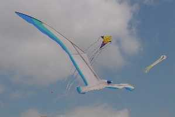
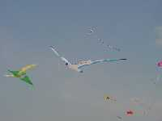
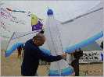
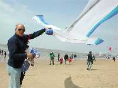
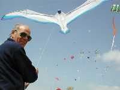
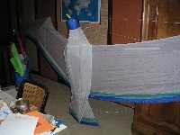
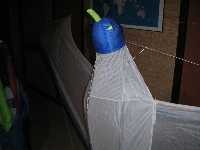

| Accueil | Albatros | Spiralier, Messager | Megoel | Indoor | Condor | Albatros2 | Demoiselle | P |


A Chatelaillon, j'ai volé pour la première fois, embrayant sur un vol de nuit mouvementé où je n'avais pas un poil de sec. La fenêtre de stabilité transversale à cette époque était en effet très étroite, et il me fallait courir vers la droite ou la gauche dès que le cerf-volant en sortait. De jour, c'était pareil, mais on voit mieux et on est moins serré : tout le monde ne se jette pas dans le feu des projecteurs !


A une dizaine de mètres d'altitude, on peut jouer avec par vent faible en rendant brusquement la main. Megoel part alors en piqué sur les innocents spectateurs, ce qui est interdit par tous les règlements. Heureusement, il suffit de tirer voire de résister sur la ligne pour qu'il reprenne un angle d'honnête cerf-volant et remonte.
La construction d'un engin de 8 m n'est quand même pas facile. La structure est en canne à pêche. Pour réaliser une armature de cette taille, il y a bien un moment où il faut taper dans le dur et monter la bête. Chez moi, 8 m ça passe seulement en ouvrant la porte de la salle de bain. Donc, si vous n'avez pas de salle de bain, ne construisez pas de Megoel !
Je voulais un corps en 3D sur une carcasse en scions de cannes à pêche. La tête et le bec (alouette...) sont en mousse, mais Bultex svp, afin de constituer (plus facilement qu'une tête de dragon chinois et en moins fragile) un volume pas trop gênant à transporter et pas dangereux pour son maître ou pour les spectateurs innocents lors des piqués dont je parlais plus haut. J'ai seulement enveloppé la mousse dans un sac plastique étanche pour éviter que la tête ne pèse 3 kg par temps de pluie ! Même le bec est en mousse, le seul problème étant que tout le monde veut le toucher pour voir s'il est dangereux. Il faudra que je le lave souvent...